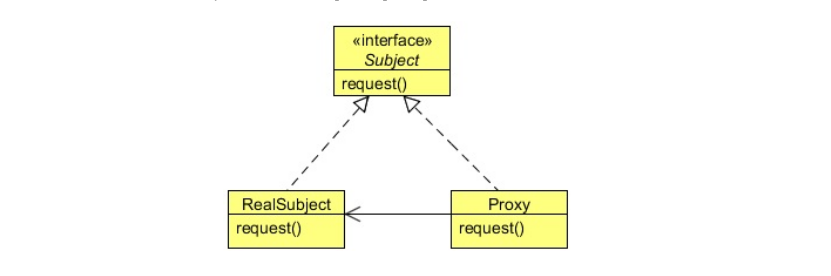

本系列主要介绍了常用的面向复用的设计模式，包括创建型模式 （Creational Patterns）、结构型模式 （Structural Patterns）和行为型模式 （Behavioral Patterns）。
23 个经典设计模式
一些工厂模式，帮助简化对象创建过程。
简单工厂模式并不属于 23 个经典的设计模式。
定义一个工厂类，它可以根据参数的不同返回不同类的实例，被创建的实例通常都具有共同的父类。因为在简单工厂模式中用于创建实例的方法是静态(static)方法，因此简单工厂模式又被称为静态工厂方法(Static Factory Method)模式，它属于类创建型模式。
（其实不用 static 也可以，只是 static 更加好，不必创建 GraphFactory 的实例，就可以调用其中的静态方法。）
代码：
为了简化创建三种图 GraphPoet、SocialNetwork、NetworkTopology过程，直接调用静态方法 createGraph(String filePath, Scanner scanner, String graphType))根据传入的文件路径、输入指令和图类型完成创建操作。
GraphFactory.java
package factory;import java.io.IOException;import java.util.Scanner;import exception.checked.CannotCreateEdgeException;import exception.checked.FileSyntaxException;import exception.checked.NoSuchEdgeTypeException;import graph.ConcreteGraph;public class GraphFactory public static ConcreteGraph createGraph (String filePath, Scanner scanner, String graphType) throws FileSyntaxException, IOException, CannotCreateEdgeException, NumberFormatException, NoSuchEdgeTypeException if (graphType.equals("GraphPoet" )) { return (new GraphPoetFactory()).createGraph(filePath, scanner); } else if (graphType.equals("SocialNetwork" )) { return (new SocialNetworkFactory()).createGraph(filePath); } else if (graphType.equals("NetworkTopology" )) { return (new NetworkTopologyFactory()).createGraph(filePath); }else if (graphType.equals("MovieGraph" )) { return (new MovieGraphFactory()).createGraph(filePath); }else { System.out.println("Illegal graph type to be created: " + graphType); return null ; } } }
简单工厂模式对于新加入的数据类型无法创建，违背“开闭原则”，而且太多分支语句。
上面的代码中使用到的 GraphPoetFactory，就是一个工厂方法模式的例子。
GraphPoetFactory.java
package factory;import ...;public class GraphPoetFactory private FileParser parser; private GraphPoet poet; private List<String> args; private double minWeight; private void addVertices () throws LabelFormatException, VertexArgumentsLengthException, VertexTypeException, NoSuchVertexTypeException ... System.out.println("vertices have been added" ); } private void addEdges () throws NumberFormatException, EdgeArgumentsLengthException, EdgeDirectionException, NotAGraphPoetEdgeException, VertexNotDefinedException, FileSyntaxException, CannotCreateEdgeException ... } @Override public GraphPoet createGraph (String filePath, Scanner scanner) throws FileSyntaxException, IOException, CannotCreateEdgeException, NumberFormatException, NotAGraphPoetEdgeException, NoSuchVertexTypeException { System.out.print("\nEnter the minimum weight of edges: " ); String minWeightString = scanner.nextLine(); minWeight = Double.parseDouble(minWeightString); parser = new FileParser(filePath); if (!parser.getGraphType().equals("GraphPoet" )) { throw new GraphTypeException("GraphPoet" , parser.getGraphType()); } poet = new GraphPoet(parser.getGraphName()); addVertices(); addEdges(); return poet; } }
UML 类图：
ConcreteCreator 继承抽象类 Creator 并重写其中的工厂方法，可以产生 ConcreteProduct 的实例，而 ConcreteProduct 又是 Product 的实现。
代码：
有个基本的接口 XMLParser，不同的 Parser 需要具体实现不同的解析方法。
XMLParser.java
package com.javacodegeeks.patterns.factorymethodpattern;public interface XMLParser public String parse () }
这个接口有一种实现方式。
FeedbackXMLParser.java
package com.javacodegeeks.patterns.factorymethodpattern;public class FeedbackXMLParser implements XMLParser @Override public String parse () System.out.println("Parsing feedback XML..." ); return "Feedback XML Message" ; } }
一般情况下，用户不太喜欢直接用 new，因为可能还需要很多操作来使构建得到的 XMLParser 符合自己的使用条件。用户希望直接得到一个已经构造好的 FeedbackXMLParser。可以把一系列操作封装到工厂方法中。
抽象类 XMLParserFactory 定义了一个工厂方法 getParser。**注意：**这个例子还用到了模板模式，抽象类中 display 方法调用还未实现的 getParser 方法。
XMLParserFactory.java
package com.javacodegeeks.patterns.factorymethodpattern;public abstract class XMLParserFactory public void display () XMLParser parser = getParser(); String msg = parser.parse(); System.out.println(msg); } protected abstract XMLParser getParser () }
FeedbackXMLParserFactory 实现了得到 FeedbackXMLParser 的工厂方法。虽然这里只是简单地 new 了一个新的 FeedbackXMLParser，但是在实际运用中可能这个方法需要完成许多操作，比如从文件中读取数据，构造一个对客户端来说开箱即用的 FeedbackXMLParser。
FeedbackXMLParserFactory.java
package com.javacodegeeks.patterns.factorymethodpattern;public class FeedbackXMLParserFactory extends XMLParserFactory @Override public XMLParser getParser () return new FeedbackXMLParser(); } }
客户端现在可以使用工厂方法来得到好用的对象，不用操心工厂方法是如何构造这个对象的。
ParserFactory service = new FeedbackXMLParserFactory(); XMLParser parser = service.getParser(); service.display();
总结：
这样做遵循 OCP(Open-Closed Principle) 原则，对扩展开放，可以新增许多 ...XMLParser，同时增加其 ...XMLParserFactory 作为工厂；对修改已有代码封闭，已有的 XMLParser 还能正常使用。
很多时候抽象类和接口可以相互转换。当认为有一些共性操作可以抽象出来的时候，就可以将接口转为抽象类。当没有所有操作都因具体实现而异的时候，可以选择接口。
对于同一种 UI（按钮、文本框、组合框），在不同的系统下显示有所不同（Spring 风格、Summer 风格）。同样是按钮，只是风格不同，可以抽象一个工厂方法接口，在不同的系统中使用不同的工厂方法子类产生一个按钮实例。
UML 类图：
AbstractFactory（抽象工厂）：它声明了一组用于创建一族产品的方法，每一个方法对应一种产品。
ConcreteFactory（具体工厂）：它实现了在抽象工厂中声明的创建产品的方法，生成一组具体产品，这些产品构成了一个产品族，每一个产品都位于某个产品等级结构中。
AbstractProduct（抽象产品）：它为每种产品声明接口，在抽象产品中声明了产品所具有的业务方法。
ConcreteProduct（具体产品）：它定义具体工厂生产的具体产品对象，实现抽象产品接口中声明的业务方法。
代码：
还是最初有一个 XMLParser 接口。
XMLParser.java
package com.javacodegeeks.patterns.abstractfactorypattern;public interface XMLParser public String parse () }
对比工厂方法模式，抽象工厂模式中的每个工厂都必须要继承一个通用的接口 AbstractParserFactory。
AbstractParserFactory.java
package com.javacodegeeks.patterns.abstractfactorypattern;public interface AbstractParserFactory public XMLParser getParserInstance (String parserType) }
开发者实现这个接口，得到一个具体的工厂。
NYParserFactory.java
package com.javacodegeeks.patterns.abstractfactorypattern;public class NYParserFactory implements AbstractParserFactory @Override public XMLParser getParserInstance (String parserType) switch (parserType){ case "NYERROR" : return new NYErrorXMLParser(); case "NYFEEDBACK" : return new NYFeedbackXMLParser(); case "NYORDER" : return new NYOrderXMLParser(); case "NYRESPONSE" : return new NYResponseXMLParser(); } return null ; } }
这个工厂根据输入的参数创建不同的 XMLParser，比如 NYFeedbackXMLParser。
NYFeedbackXMLParser.java
package com.javacodegeeks.patterns.abstractfactorypattern;public class NYFeedbackXMLParser implements XMLParser @Override public String parse () System.out.println("NY Parsing feedback XML..." ); return "NY Feedback XML Message" ; } }
这样客户端只需要知道自己使用的是 AbstractParserFactory，使用过程中可以是不同的实现，从而得到具体的 Parser。
AbstractParserFactory parserFactory = ParserFactoryProducer.getFactory("NYFactory" ); XMLParser parser = parserFactory.getParserInstance("NYORDER" ); String msg="" ; msg = parser.parse(); System.out.println(msg); parserFactory = ParserFactoryProducer.getFactory("TWFactory" ); parser = parserFactory.getParserInstance("TWFEEDBACK" ); ...
总结：
相比于工厂方法只有一类 XMLParserFactory（可以创建 ErrorXMLParser、FeedbackXMLParser、ResponseXMLParser、OrderXMLParser），抽象工厂在 AbstractParserFactory 基础上可以派生出 NYParserFactory（可以创建 NYErrorXMLParser、NYFeedbackXMLParser、NYResponseXMLParser、NYOrderXMLParser）、TWParserFactory等等。
UML 类图：
Builder 接口定义了如何创建 Product，SimpleClass 实现 Builder，对 Product 游戏人物进行拆解，开始给游戏人物加入各种定义，提供 getResult() 来让客户端拿到这个游戏人物。Director aggregate Builder 来得到游戏人物。
代码：
一辆汽车有各种组件，你可以定义（set）并且查看（get）。
Car.java
package com.javacodegeeks.patterns.builderpattern;public class Car private String bodyStyle; private String power; private String engine; private String breaks; private String seats; private String windows; private String fuelType; private String carType; public Car (String carType) this .carType = carType; } public String getBodyStyle () return bodyStyle; } public void setBodyStyle (String bodyStyle) this .bodyStyle = bodyStyle; } public String getPower () return power; } public void setPower (String power) this .power = power; } public String getEngine () return engine; } public void setEngine (String engine) this .engine = engine; } public String getBreaks () return breaks; } public void setBreaks (String breaks) this .breaks = breaks; } public String getSeats () return seats; } public void setSeats (String seats) this .seats = seats; } public String getWindows () return windows; } public void setWindows (String windows) this .windows = windows; } public String getFuelType () return fuelType; } public void setFuelType (String fuelType) this .fuelType = fuelType; } @Override public String toString () StringBuilder sb = new StringBuilder(); sb.append("--------------" +carType+"--------------------- \n" ); sb.append(" Body: " ); sb.append(bodyStyle); sb.append("\n Power: " ); sb.append(power); sb.append("\n Engine: " ); sb.append(engine); sb.append("\n Breaks: " ); sb.append(breaks); sb.append("\n Seats: " ); sb.append(seats); sb.append("\n Windows: " ); sb.append(windows); sb.append("\n Fuel Type: " ); sb.append(fuelType); return sb.toString(); } }
某个汽车制造厂定义了一个 CarBuilder 接口，要求员工们遵照这样的方法去生产一辆汽车。
CarBuilder.java
package com.javacodegeeks.patterns.builderpattern;public interface CarBuilder public void buildBodyStyle () public void buildPower () public void buildEngine () public void buildBreaks () public void buildSeats () public void buildWindows () public void buildFuelType () public Car getCar () }
有一个车间是生产运动汽车的，他们这样子去实现这个接口。（其他车间是一样的道理，此处略去）
SportsCarBuilder.java
package com.javacodegeeks.patterns.builderpattern;public class SportsCarBuilder implements CarBuilder private final Car car = new Car("SPORTS" ); @Override public void buildBodyStyle () car.setBodyStyle("External dimensions: overall length (inches): 192.3," + " overall width (inches): 75.5, overall height (inches): 54.2, wheelbase (inches): 112.3," + " front track (inches): 63.7, rear track (inches): 64.1 and curb to curb turning circle (feet): 37.7" ); } @Override public void buildPower () car.setPower("323 hp @ 6,800 rpm; 278 ft lb of torque @ 4,800 rpm" ); } @Override public void buildEngine () car.setEngine("3.6L V 6 DOHC and variable valve timing" ); } @Override public void buildBreaks () car.setBreaks("Four-wheel disc brakes: two ventilated. Electronic brake distribution. StabiliTrak stability control" ); } @Override public void buildSeats () car.setSeats("Driver sports front seat with one power adjustments manual height, front passenger seat sports front seat with one power adjustments" ); } @Override public void buildWindows () car.setWindows("Front windows with one-touch on two windows" ); } @Override public void buildFuelType () car.setFuelType("Gasoline 17 MPG city, 28 MPG highway, 20 MPG combined and 380 mi. range" ); } @Override public Car getCar () return car; } }
运用外观模式 封装操作、运用策略模式 根据传入的carBuilder不同，车间的全共工作人员 Director 共同配合让这个车间工作起来组装汽车。
CarDirector.java
package com.javacodegeeks.patterns.builderpattern;public class CarDirector private CarBuilder carBuilder; public CarDirector (CarBuilder carBuilder) this .carBuilder = carBuilder; } public void build () carBuilder.buildBodyStyle(); carBuilder.buildPower(); carBuilder.buildEngine(); carBuilder.buildBreaks(); carBuilder.buildSeats(); carBuilder.buildWindows(); carBuilder.buildFuelType(); } }
CarBuilder carBuilder = new SportsCarBuilder(); CarDirector director = new CarDirector(carBuilder); director.build(); car = carBuilder.getCar(); System.out.println(car);
利用现有类和对象组成更大的数据结构。比如将两个或更多的类进行集成产生更复杂的类，同时还有可能增加新的功能。
使用 3 种笔锋和 4 颜料组成 12 种不同的毛笔。
Chrome 浏览器将操作系统与图像格式两个维度分离，同时支持 4 个操作系统的 5 种图像。
UML 类图：
Abstraction aggregate Implementor，它们之间的联系称为“桥”。RefinedAbstration 实现 Abstraction。ConcreteImplementor 实现 Implementor。
桥接模式起到解耦（decouple）作用，实现与接口不再永久相关联，修改 ConcreteImplementor 之后客户端仍可使用 Implementor 接口。
代码：
汽车有齿轮锁定（gear locking）和中央锁定（central locking）两种类型，而且还有不同的牌子。表现为 product 和 carType。
Car.java
package com.javacodegeeks.patterns.bridgepattern;public abstract class Car private final Product product; private final String carType; public Car (Product product,String carType) this .product = product; this .carType = carType; } public abstract void assemble () public abstract void produceProduct () public void printDetails () System.out.println("Car: " +carType+", Product:" +product.productName()); } }
将 product 解耦出来，定义接口 Product，在其基础上进行实现。
Product.java
package com.javacodegeeks.patterns.bridgepattern;public interface Product public String productName () public void produce () }
GearLocking.java
package com.javacodegeeks.patterns.bridgepattern;public class GearLocking implements Product private final String productName; public GearLocking (String productName) this .productName = productName; } @Override public String productName () return productName; } @Override public void produce () System.out.println("Producing Gear Locking System" ); ... } }
客户端可以使用各种组合得到想要的汽车。
Product product = new CentralLocking("Central Locking System" ); Product product2 = new GearLocking("Gear Locking System" ); Car car = new BigWheel(product , "BigWheel xz model" ); car.produceProduct(); car.assemble(); car.printDetails(); System.out.println(); car = new BigWheel(product2 , "BigWheel xz model" ); car.produceProduct(); car.assemble(); car.printDetails();
总结：
类的组成部分较多的时候，将一些内部变量 aggregate 出去，能够减少许多压力。结构关系非常明显。
桥接模式
策略模式
设备抽象接口可以由电脑、手机等实现，在运行时为设备拥有者设定不同的设备，会建立 delegation。
使用螺丝刀时将其取出，不用时没有任何联系。注重算法，不强调结构上的联系。
在国内买不到 Google Pixel 手机，你可以第三方零售商（代购）帮你去国外买一个，你再向他买。
大家平时所用的访问 Google 的正向代理。
主要有三类：
远程代理(Remote Proxy) ：为一个位于不同的地址空间的对象 提供一个本地的代理对象 ，这个不同的地址空间可以是在同一台主机中，也可是在另一台主机中，远程代理又称为大使(Ambassador)。虚拟代理(Virtual Proxy) ：如果需要创建一个资源消耗较大的对象 ，先创建一个消耗相对较小的对象来表示，真实对象只在需要时才会被真正创建 。保护代理(Protect Proxy) ：控制 对一个对象的访问，可以给不同的用户提供不同级别的使用权限。
UML 类图：

访问过程：client -> Proxy -> RealSubject。
代码：
有一个远程的报告生成器接口，继承了 Java 自带的Remote 而变成被代理者。
The Remote interface serves to identify interfaces whose methods may be invoked from a non-local virtual machine. Any object that is a remote object must directly or indirectly implement this interface. Only those methods specified in a “remote interface”, an interface that extends java.rmi.Remote is available remotely.
ReportGenerator.java
package com.javacodegeeks.patterns.proxypattern.remoteproxy;import java.rmi.Remote;import java.rmi.RemoteException;public interface ReportGenerator extends Remote public String generateDailyReport () throws RemoteException }
它也在远程被实现了。
ReportGeneratorImpl.java
package com.javacodegeeks.patterns.proxypattern.remoteproxy;import java.rmi.Naming;import java.rmi.RemoteException;import java.rmi.server.UnicastRemoteObject;import java.util.Date;public class ReportGeneratorImpl extends UnicastRemoteObject implements ReportGenerator private static final long serialVersionUID = 3107413009881629428L ; protected ReportGeneratorImpl () throws RemoteException } @Override public String generateDailyReport () throws RemoteException StringBuilder sb = new StringBuilder(); sb.append("********************Location X Daily Report********************" ); sb.append("\n Location ID: 012" ); sb.append("\n Today's Date: " +new Date()); sb.append("\n Total Pizza Sell: 112" ); sb.append("\n Total Sale: $2534" ); sb.append("\n Net Profit: $1985" ); sb.append("\n ***************************************************************" ); return sb.toString(); } public static void main (String[] args) try { ReportGenerator reportGenerator = new ReportGeneratorImpl(); Naming.rebind("PizzaCoRemoteGenerator" , reportGenerator); } catch (Exception e) { e.printStackTrace(); } } }
客户端无法直接用远程接口，而代理则可以使用，同时把相同的功能提供给客户端，下面是代理的一段代码。
ReportGenerator reportGenerator = (ReportGenerator)Naming.lookup("rmi://127.0.0.1/PizzaCoRemoteGenerator" ); System.out.println(reportGenerator.generateDailyReport());
这是最简单的远程代理 ，当然可以在代理那儿对用户可以进行的操作做一些限制，这就成为了保护代理 。
树形结构随处可见，比如操作系统的文件组织结构、软件菜单、公司部门架构等等。
UML 类图：
Composite aggregate 了许多 Component，这些组件的具体实现可以是叶子 Leaf，也可以是 Composite 本身。
代码：
不管是叶子，还是中间节点，都属于同一种接口或抽象类。在 html 语言中，不管是可扩展的父级标签，还是终止标签，都要继承基础的 html 标签 HtmlTag。
HtmlTag.java
package com.javacodegeeks.patterns.compositepattern;import java.util.List;public abstract class HtmlTag public abstract String getTagName () public abstract void setStartTag (String tag) public abstract void setEndTag (String tag) public void setTagBody (String tagBody) throw new UnsupportedOperationException("Current operation is not support for this object" ); } public void addChildTag (HtmlTag htmlTag) throw new UnsupportedOperationException("Current operation is not support for this object" ); } public void removeChildTag (HtmlTag htmlTag) throw new UnsupportedOperationException("Current operation is not support for this object" ); } public List<HtmlTag>getChildren(){ throw new UnsupportedOperationException("Current operation is not support for this object" ); } public abstract void generateHtml () }
叶子节点只需实现抽象方法，对于 addChildTag 这样的操作不必实现。
HtmlElement.java
package com.javacodegeeks.patterns.compositepattern;public class HtmlElement extends HtmlTag private String tagName; private String startTag; private String endTag; private String tagBody; public HtmlElement (String tagName) this .tagName = tagName; this .tagBody = "" ; this .startTag = "" ; this .endTag = "" ; } @Override public String getTagName () return tagName; } @Override public void setStartTag (String tag) this .startTag = tag; } @Override public void setEndTag (String tag) this .endTag = tag; } @Override public void setTagBody (String tagBody) this .tagBody = tagBody; } @Override public void generateHtml () System.out.println(startTag+"" +tagBody+"" +endTag); } }
父级标签可能在中间继续插入标签，需要多实现一些方法支持递归插入 HtmlTag。
HtmlParentElement.java
package com.javacodegeeks.patterns.compositepattern;import java.util.ArrayList;import java.util.List;public class HtmlParentElement extends HtmlTag private String tagName; private String startTag; private String endTag; private List<HtmlTag>childrenTag; public HtmlParentElement (String tagName) this .tagName = tagName; this .startTag = "" ; this .endTag = "" ; this .childrenTag = new ArrayList<>(); } @Override public String getTagName () return tagName; } @Override public void setStartTag (String tag) this .startTag = tag; } @Override public void setEndTag (String tag) this .endTag = tag; } @Override public void addChildTag (HtmlTag htmlTag) childrenTag.add(htmlTag); } @Override public void removeChildTag (HtmlTag htmlTag) childrenTag.remove(htmlTag); } @Override public List<HtmlTag>getChildren(){ return childrenTag; } @Override public void generateHtml () System.out.println(startTag); for (HtmlTag tag : childrenTag){ tag.generateHtml(); } System.out.println(endTag); } }
客户端可以自己构造想要的 html 树。
HtmlTag parentTag = new HtmlParentElement("<html>" ); parentTag.setStartTag("<html>" ); parentTag.setEndTag("</html>" ); HtmlTag p1 = new HtmlParentElement("<body>" ); p1.setStartTag("<body>" ); p1.setEndTag("</body>" ); parentTag.addChildTag(p1); HtmlTag child1 = new HtmlElement("<p>" ); child1.setStartTag("<p>" ); child1.setEndTag("</p>" ); child1.setTagBody("Testing html tag library" ); p1.addChildTag(child1); child1 = new HtmlElement("<p>" ); child1.setStartTag("<p>" ); child1.setEndTag("</p>" ); child1.setTagBody("Paragraph 2" ); p1.addChildTag(child1); parentTag.generateHtml();
与算法 有关，与对象之间的任务分配相关。这种模式同时表示了类和对象之间的一种联系，能够让你在运行时做一些决策，避免了很多头疼的问题。
在交通路口，每辆车都观察者红绿路灯，一旦路等状态改变，车也要做出一些改变。
在 GitHub 中 Watch 某个项目后，你就成为了观察者，每次项目有动态，你都会收到邮件，你可以选择忽视，或者去做一些 hack。
UML 类图：
Observer 一直关注着 Subject 的动态（Subject 给 Observer 发信息），ConcreteObserver 需要有一个 ConcreteSubject 来接收消息。
代码：
Subject 可以增加/删除观察者，并且通知他们最新进展。（容易联想到 Youtube 里面的 subscribe，这个 Subject 相当于还未实现的一个 Youtuber，可以接受别人的订阅）
Subject.java
package com.javacodegeeks.patterns.observerpattern;public interface Subject public void subscribeObserver (Observer observer) public void unSubscribeObserver (Observer observer) public void notifyObservers () public String subjectDetails () }
Observer 可以订阅、取消订阅、收到订阅之后进行操作。
Observer.java
package com.javacodegeeks.patterns.observerpattern;public interface Observer public void update (String desc) public void subscribe () public void unSubscribe () }
订阅的具体操作是让 Subject 知道自己属于订阅者的一部分。
SMSUsers.java
package com.javacodegeeks.patterns.observerpattern;public class SMSUsers implements Observer private final Subject subject; private String desc; private String userInfo; public SMSUsers (Subject subject,String userInfo) if (subject==null ){ throw new IllegalArgumentException("No Publisher found." ); } this .subject = subject; this .userInfo = userInfo; } @Override public void update (String desc) this .desc = desc; display(); } private void display () System.out.println("[" +userInfo+"]: " +desc); } @Override public void subscribe () System.out.println("Subscribing " +userInfo+" to " +subject.subjectDetails()+" ..." ); this .subject.subscribeObserver(this ); System.out.println("Subscribed successfully." ); } @Override public void unSubscribe () System.out.println("Unsubscribing " +userInfo+" to " +subject.subjectDetails()+" ..." ); this .subject.unSubscribeObserver(this ); System.out.println("Unsubscribed successfully." ); } }
被订阅者每次给用户发消息都会更新他们的状态。
CommentaryObject.java
package com.javacodegeeks.patterns.observerpattern;import java.util.List;public class CommentaryObject implements Subject ,Commentary private final List<Observer>observers; private String desc; private final String subjectDetails; public CommentaryObject (List<Observer>observers,String subjectDetails) this .observers = observers; this .subjectDetails = subjectDetails; } @Override public void subscribeObserver (Observer observer) observers.add(observer); } @Override public void unSubscribeObserver (Observer observer) int index = observers.indexOf(observer); observers.remove(index); } @Override public void notifyObservers () System.out.println(); for (Observer observer : observers){ observer.update(desc); } } @Override public void setDesc (String desc) this .desc = desc; notifyObservers(); } @Override public String subjectDetails () return subjectDetails; } }
但是你会觉得这样太麻烦了，继承 Java 自带的 Observable 可以不用实现 subscribeObserver、unSubscribeObserver 和 notifyObservers。
CommentaryObjectObservable.java
package com.javacodegeeks.patterns.observerpattern;import java.util.Observable;public class CommentaryObjectObservable extends Observable implements Commentary private String desc; private final String subjectDetails; public CommentaryObjectObservable (String subjectDetails) this .subjectDetails = subjectDetails; } @Override public void setDesc (String desc) this .desc = desc; setChanged(); notifyObservers(desc); } public String subjectDetails () return subjectDetails; } }
Subject subject = new CommentaryObject(new ArrayList<Observer>(), "Soccer Match [2014AUG24]" ); Observer observer1 = new SMSUsers(subject, "Adam Warner [New York]" ); observer1.subscribe(); System.out.println(); Observer observer2 = new SMSUsers(subject, "Tim Ronney [London]" ); observer2.subscribe(); Commentary cObject = ((Commentary)subject); cObject.setDesc("Welcome to live Soccer match" ); cObject.setDesc("Current score 0-0" ); System.out.println(); observer2.unSubscribe();
有一张药品清单，你需要在不同分别取药。
公司有很多员工，有全职或兼职，需要由人事部计算工作时间、财务部计算工资。
UML 类图：
Visitor 可以访问 A、B。Element 中定义接受操作 accept，接受来自某个具体的访问者的访问。
代码：
基于组合模式中的 HtmlTag，设计一种可以修改其 class 定义的 Visitor。唯一的区别是 HtmlTag 新增了 accept() 方法。
public abstract class HtmlTag implements Element
HtmlParentElement.java 中修改的部分
... @Override public void accept (Visitor visitor) visitor.visit(this ); } ...
CssClassVisitor.java
package com.javacodegeeks.patterns.visitorpattern;public class CssClassVisitor implements Visitor @Override public void visit (HtmlElement element) element.setStartTag(element.getStartTag().replace(">" , " class='visitor'>" )); } @Override public void visit (HtmlParentElement parentElement) parentElement.setStartTag(parentElement.getStartTag().replace(">" , " class='visitor'>" )); } }
System.out.println("Before visitor......... \n" ); HtmlTag parentTag = new HtmlParentElement("<html>" ); parentTag.setStartTag("<html>" ); parentTag.setEndTag("</html>" ); HtmlTag p1 = new HtmlParentElement("<body>" ); p1.setStartTag("<body>" ); p1.setEndTag("</body>" ); parentTag.addChildTag(p1); HtmlTag child1 = new HtmlElement("<p>" ); child1.setStartTag("<p>" ); child1.setEndTag("</p>" ); child1.setTagBody("Testing html tag library" ); p1.addChildTag(child1); child1 = new HtmlElement("<p>" ); child1.setStartTag("<p>" ); child1.setEndTag("</p>" ); child1.setTagBody("Paragraph 2" ); p1.addChildTag(child1); parentTag.generateHtml(); System.out.println("\nAfter visitor....... \n" ); Visitor cssClass = new CssClassVisitor(); Visitor style = new StyleVisitor(); parentTag = new HtmlParentElement("<html>" ); parentTag.setStartTag("<html>" ); parentTag.setEndTag("</html>" ); parentTag.accept(style); parentTag.accept(cssClass); p1 = new HtmlParentElement("<body>" ); p1.setStartTag("<body>" ); p1.setEndTag("</body>" ); p1.accept(style); p1.accept(cssClass); parentTag.addChildTag(p1); child1 = new HtmlElement("<p>" ); child1.setStartTag("<p>" ); child1.setEndTag("</p>" ); child1.setTagBody("Testing html tag library" ); child1.accept(style); child1.accept(cssClass); p1.addChildTag(child1); child1 = new HtmlElement("<p>" ); child1.setStartTag("<p>" ); child1.setEndTag("</p>" ); child1.setTagBody("Paragraph 2" ); child1.accept(style); child1.accept(cssClass); p1.addChildTag(child1); parentTag.generateHtml();
总结：
可以动态地 使用不同的 visitor，而无需修改被 visit 的类的实现。可以将某些操作分离开来，强调算法，也是一种行为型模式。
访问者模式
迭代器模式
策略模式
客户端可以灵活地选择 visitor，对被访问者进行不同的操作
也是行为型模式，但是只允许客户端进行迭代操作
ADT 内部自己有不同的选择策略，和访问者模式 ADT 被动的被访问不同
聊天群方便告知所有人一条信息
软件中错综复杂的逻辑关系需要更简单的管理方法
中介起到了转发消息的功能。
UML 类图：
Colleague 接口通过 Mediator 传送消息。Mediator 的实现 ConcreteMediator 会告知所有的 ConcreteColleague。
代码：
在一台机器中，各组件通过中介相互通信。
MachineMediator.java
package com.javacodegeeks.patterns.mediatorpattern;public interface MachineMediator public void start () public void wash () public void open () public void closed () public void on () public void off () public boolean checkTemperature (int temp) }
Machine 就实现了 Colleague，能够 setMediator。
Machine.java
package com.javacodegeeks.patterns.mediatorpattern;public class Machine implements Colleague private MachineMediator mediator; @Override public void setMediator (MachineMediator mediator) this .mediator = mediator; } public void start () mediator.open(); } public void wash () mediator.wash(); } }
Button 也实现了 Colleague。
Button.java
package com.javacodegeeks.patterns.mediatorpattern;public class Button implements Colleague private MachineMediator mediator; @Override public void setMediator (MachineMediator mediator) this .mediator = mediator; } public void press () System.out.println("Button pressed." ); mediator.start(); } }
在 Machine 进行 wash 操作时，中介者会告知所有相关的组件，这就是中介所起的作用。
CottonMediator.java
package com.javacodegeeks.patterns.mediatorpattern;public class CottonMediator implements MachineMediator private final Machine machine; private final Heater heater; private final Motor motor; private final Sensor sensor; private final SoilRemoval soilRemoval; private final Valve valve; public CottonMediator (Machine machine,Heater heater,Motor motor,Sensor sensor,SoilRemoval soilRemoval,Valve valve) this .machine = machine; this .heater = heater; this .motor = motor; this .sensor = sensor; this .soilRemoval = soilRemoval; this .valve = valve; System.out.println(".........................Setting up for COTTON program........................." ); } @Override public void start () machine.start(); } @Override public void wash () motor.startMotor(); motor.rotateDrum(700 ); System.out.println("Adding detergent" ); soilRemoval.low(); System.out.println("Adding softener" ); } @Override public void open () valve.open(); } @Override public void closed () valve.closed(); } @Override public void on () heater.on(40 ); } @Override public void off () heater.off(); } @Override public boolean checkTemperature (int temp) return sensor.checkTemperature(temp); } }
客户端可能会用上面的 CottonMediator 做中介者，在 Button 中使用这个中介者。
Sensor sensor = new Sensor(); SoilRemoval soilRemoval = new SoilRemoval(); Motor motor = new Motor(); Machine machine = new Machine(); Heater heater = new Heater(); Valve valve = new Valve(); Button button = new Button(); MachineMediator mediator = new CottonMediator(machine, heater, motor, sensor, soilRemoval, valve); button.setMediator(mediator); machine.setMediator(mediator); heater.setMediator(mediator); valve.setMediator(mediator); button.press(); ...
输出结果
Setting up for COTTON program Button pressed. Valve is opened... Filling water... Valve is closed... Heater is on... Temperature reached 40 C Temperature is set to 40 Heater is off... Start motor... Rotating drum at 700 rpm. Adding detergent Setting Soil Removal to low Adding softener
总结：
观察者模式
中介者模式
自己（Youtuber）来广播，其他对象接收
第三方中介负责广播
开关通过电线请求电灯打开。
软件中一个按钮请求执行某个操作。
很多时候，希望能够以一种松耦合的方式来设计软件，使得请求发送者与请求接收者能够消除彼此之间的耦合，让对象之间的调用关系更加灵活，可以灵活地指定请求接收者以及被请求的操作。命令模式为此类问题提供了一个较为完美的解决方案。
将一个请求封装为一个对象，从而让我们可用不同的请求对客户进行参数化；对请求排队或者记录请求日志，以及支持可撤销的操作。命令模式是一种对象行为型模式，其别名为动作(Action)模式或事务(Transaction)模式。
UML 类图：
ConcreteCommand 调用 Receiver 实现 execute，将 Receiver 和 Invoker 联系起来。
代码：
Client
Receiver
Invoker
Command
ConcreteCommand
客户端
Email
ThreadPool
Job
EmailJob
收到命令后，由通用的 Job 执行。
Job.java
package com.javacodegeeks.patterns.commandpattern;public interface Job public void run () }
比如 EmailJob，在内部 aggregate 了一个 Email，可以收发邮件。
EmailJob.java
package com.javacodegeeks.patterns.commandpattern;public class EmailJob implements Job private Email email; public void setEmail (Email email) this .email = email; } @Override public void run () System.out.println("Job ID: " +Thread.currentThread().getId()+" executing email jobs." ); if (email!=null ){ email.sendEmail(); } try { Thread.sleep(1000 ); } catch (InterruptedException e) { Thread.currentThread().interrupt(); } } }
Email 的内容。
Email.java
package com.javacodegeeks.patterns.commandpattern;public class Email public void sendEmail () System.out.println("Sending email......." ); } }
所有的 Job 都放入到同一个 ThreadPool 中，排队执行这些命令。
ThreadPool.java
package com.javacodegeeks.patterns.commandpattern;import java.util.concurrent.BlockingQueue;import java.util.concurrent.LinkedBlockingQueue;public class ThreadPool private final BlockingQueue<Job> jobQueue; private final Thread[] jobThreads; private volatile boolean shutdown; public ThreadPool (int n) { jobQueue = new LinkedBlockingQueue<>(); jobThreads = new Thread[n]; for (int i = 0 ; i < n; i++) { jobThreads[i] = new Worker("Pool Thread " + i); jobThreads[i].start(); } } public void addJob (Job r) { try { jobQueue.put(r); } catch (InterruptedException e) { Thread.currentThread().interrupt(); } } public void shutdownPool () { while (!jobQueue.isEmpty()) { try { Thread.sleep(1000 ); } catch (InterruptedException e) { e.printStackTrace(); } } shutdown = true ; for (Thread workerThread : jobThreads) { workerThread.interrupt(); } } private class Worker extends Thread { public Worker (String name) { super (name); } public void run () { while (!shutdown) { try { Job r = jobQueue.take(); r.run(); } catch (InterruptedException e) { } } } } }
只要客户端是在使用这个线程池，每个任务一定执行的相应的操作，比如 emailJob 一定是发送邮件，客户端无需知道细节。
ThreadPool pool = new ThreadPool(10 ); Email email = null ; EmailJob emailJob = new EmailJob(); Sms sms = null ; SmsJob smsJob = new SmsJob(); FileIO fileIO = null ; FileIOJob fileIOJob = new FileIOJob(); Logging logging = null ;; LoggingJob logJob = new LoggingJob(); for (int i = 0 ; i < 5 ; i++) { email = new Email(); emailJob.setEmail(email); sms = new Sms(); smsJob.setSms(sms); fileIO = new FileIO(); fileIOJob.setFileIO(fileIO); logging = new Logging(); logJob.setLogging(logging); pool.addJob(emailJob); pool.addJob(smsJob); pool.addJob(fileIOJob); pool.addJob(logJob); } pool.shutdownPool();
简化一下，其实就是
emailJob.setEmail(new Email()); emailJob.run();
总结：
命令模式的本质是对请求进行封装，一个请求对应于一个命令 ，将发出命令 的责任和执行命令 的责任分割开。命令模式允许请求的一方 和接收的一方 独立开来，使得请求的一方不必知道接收请求的一方的接口，更不必知道请求如何被接收、操作是否被执行、何时被执行，以及是怎么被执行的。
Java 中的 try-catch，没有 catch 语句则会交给上一级进行处理。
斗地主时对于一张牌，每个人轮流进行处理（要的起、要不起）。
公司不同等级的财务支出需要不同的人审批。
UML 类图：
ConcreteHandler 只处理有责任处理的事件，当无法处理时，交给后继者来处理。
代码：
抽象的 Handler 定义了自己不能处理是交给谁来处理的 setHandler，自己的处理方法 process。
Handler.java
package com.javacodegeeks.patterns.chainofresponsibility;public interface Handler public void setHandler (Handler handler) public void process (File file) public String getHandlerName () }
它的一种实现，比如处理图片的 Handler。
ImageFileHandler.java
package com.javacodegeeks.patterns.chainofresponsibility;public class ImageFileHandler implements Handler private Handler handler; private String handlerName; public ImageFileHandler (String handlerName) this .handlerName = handlerName; } @Override public void setHandler (Handler handler) this .handler = handler; } @Override public void process (File file) if (file.getFileType().equals("image" )){ System.out.println("Process and saving image file... by " +handlerName); }else if (handler!=null ){ System.out.println(handlerName+" fowards request to " +handler.getHandlerName()); handler.process(file); }else { System.out.println("File not supported" ); } } @Override public String getHandlerName () return handlerName; } }
客户端用起来是这样的。
package com.javacodegeeks.patterns.chainofresponsibility;public class TestChainofResponsibility public static void main (String[] args) File file = null ; Handler textHandler = new TextFileHandler("Text Handler" ); Handler docHandler = new DocFileHandler("Doc Handler" ); Handler excelHandler = new ExcelFileHandler("Excel Handler" ); Handler audioHandler = new AudioFileHandler("Audio Handler" ); Handler videoHandler = new VideoFileHandler("Video Handler" ); Handler imageHandler = new ImageFileHandler("Image Handler" ); textHandler.setHandler(docHandler); docHandler.setHandler(excelHandler); excelHandler.setHandler(audioHandler); audioHandler.setHandler(videoHandler); videoHandler.setHandler(imageHandler); file = new File("Abc.mp3" , "audio" , "C:" ); textHandler.process(file); System.out.println("---------------------------------" ); file = new File("Abc.jpg" , "video" , "C:" ); textHandler.process(file); System.out.println("---------------------------------" ); file = new File("Abc.doc" , "doc" , "C:" ); textHandler.process(file); System.out.println("---------------------------------" ); file = new File("Abc.bat" , "bat" , "C:" ); textHandler.process(file); } }
运行结果
Text Handler forwards request to Doc Handler Doc Handler forwards request to Excel Handler Excel Handler forwards request to Audio Handler Process and saving audio file... by Audio Handler --------------------------------- Text Handler forwards request to Doc Handler Doc Handler forwards request to Excel Handler Excel Handler forwards request to Audio Handler Audio Handler forwards request to Video Handler Process and saving video file... by Video Handler --------------------------------- Text Handler forwards request to Doc Handler Process and saving doc file... by Doc Handler --------------------------------- Text Handler forwards request to Doc Handler Doc Handler forwards request to Excel Handler Excel Handler forwards request to Audio Handler Audio Handler forwards request to Video Handler Video Handler forwards request to Image Handler File not supported
创建型模式
结构型模式
行为型模式
简单工厂模式
桥接模式
观察者模式
工厂方法模式
代理模式
访问者模式
抽象工厂模式
组合模式
中介者模式
命令模式
责任链模式
Java Design Patterns Software Construction at HIT | 6.2 Design Patterns for Maintainability
设计模式Java版